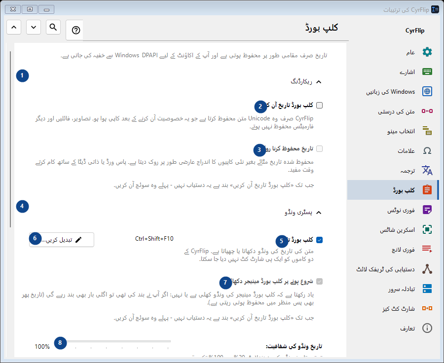
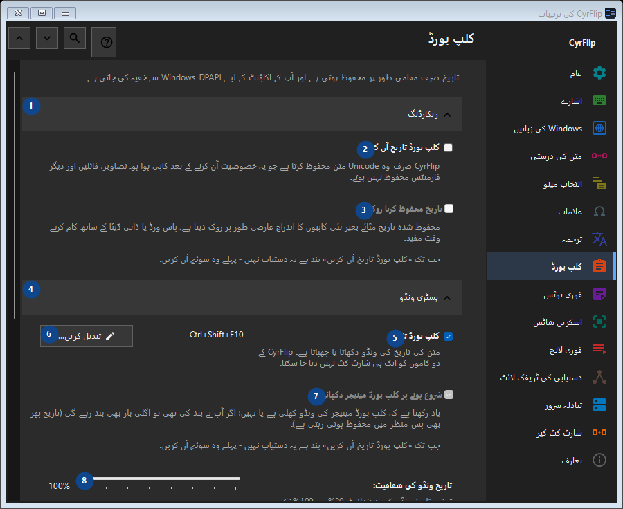

کلپ بورڈ
مقصد
تاریخ صرف مقامی طور پر محفوظ ہوتی ہے اور آپ کے اکاؤنٹ کے لیے Windows DPAPI سے خفیہ کی جاتی ہے۔


استعمال کی ترتیب
ترتیبات فوراً لاگو ہوتی ہیں۔ کوئی لازمی ترتیب نہیں؛ نیچے کے گروپ استعمال کریں۔
عناصر
1. ریکارڈنگ
درج شدہ کارروائی کے لیے یہ حکم استعمال کریں۔ قبول کرنے سے پہلے تصدیق پڑھیں۔
آپ کے شارٹ کٹ2. کلپ بورڈ تاریخ آن کریں
CyrFlip صرف وہ Unicode متن محفوظ کرتا ہے جو یہ خصوصیت آن کرنے کے بعد کاپی ہوا ہو۔ تصاویر، فائلیں اور دیگر فارمیٹس محفوظ نہیں ہوتے۔
آپ کے شارٹ کٹ3. تاریخ محفوظ کرنا روکیں
جب تک «کلپ بورڈ تاریخ آن کریں» بند ہے یہ دستیاب نہیں - پہلے وہ سوئچ آن کریں۔ یہ عنصر ابھی دستیاب نہیں۔ پہلے خصوصیت فعال کریں یا اندراج منتخب کریں۔
آپ کے شارٹ کٹ4. ہسٹری ونڈو
درج شدہ کارروائی کے لیے یہ حکم استعمال کریں۔ قبول کرنے سے پہلے تصدیق پڑھیں۔
آپ کے شارٹ کٹ5. کلپ بورڈ تاریخ
متن کی تاریخ کی ونڈو دکھاتا یا چھپاتا ہے۔ CyrFlip کے دو کاموں کو ایک ہی شارٹ کٹ نہیں دیا جا سکتا۔
آپ کے شارٹ کٹ6. تبدیل کریں - کلپ بورڈ تاریخ
درج شدہ کارروائی کے لیے یہ حکم استعمال کریں۔ قبول کرنے سے پہلے تصدیق پڑھیں۔
آپ کے شارٹ کٹ7. شروع ہونے پر کلپ بورڈ مینیجر دکھائیں
جب تک «کلپ بورڈ تاریخ آن کریں» بند ہے یہ دستیاب نہیں - پہلے وہ سوئچ آن کریں۔ یہ عنصر ابھی دستیاب نہیں۔ پہلے خصوصیت فعال کریں یا اندراج منتخب کریں۔
آپ کے شارٹ کٹ8. تاریخ ونڈو کی شفافیت
جب تک «کلپ بورڈ تاریخ آن کریں» بند ہے یہ دستیاب نہیں - پہلے وہ سوئچ آن کریں۔ یہ عنصر ابھی دستیاب نہیں۔ پہلے خصوصیت فعال کریں یا اندراج منتخب کریں۔
آپ کے شارٹ کٹ9. تاریخ میں تلاش کریں
متن کے ٹکڑے سے تلاش کے لیے الگ ونڈو کھولتا ہے۔ تلاش کے لیے کم از کم تین حروف لکھیں۔
آپ کے شارٹ کٹ10. صفائی
درج شدہ کارروائی کے لیے یہ حکم استعمال کریں۔ قبول کرنے سے پہلے تصدیق پڑھیں۔
آپ کے شارٹ کٹ11. پوری تاریخ مٹائیں
میموری اور خفیہ مقامی فائل سے تمام اندراجات حذف کر دیتا ہے۔ اسے واپس نہیں کیا جا سکتا۔
آپ کے شارٹ کٹ12. دوسرے کمپیوٹر پر منتقلی
درج شدہ کارروائی کے لیے یہ حکم استعمال کریں۔ قبول کرنے سے پہلے تصدیق پڑھیں۔
آپ کے شارٹ کٹ13. ایکسپورٹ کریں...
آپ کے نوٹس اور منتخب کلپ بورڈ ہسٹری والی ایک کھلی ٹیکسٹ فائل: اسے کسی بھی ایڈیٹر یا فون پر پڑھا جا سکتا ہے اور دوسرے کمپیوٹر پر CyrFlip میں امپورٹ کیا جا سکتا ہے۔ فائل خفیہ نہیں کی جاتی۔ امپورٹ دکھاتا ہے کہ کیا شامل ہوگا اور کچھ حذف نہیں کرتا۔
آپ کے شارٹ کٹ14. امپورٹ کریں...
درج شدہ کارروائی کے لیے یہ حکم استعمال کریں۔ قبول کرنے سے پہلے تصدیق پڑھیں۔
آپ کے شارٹ کٹ